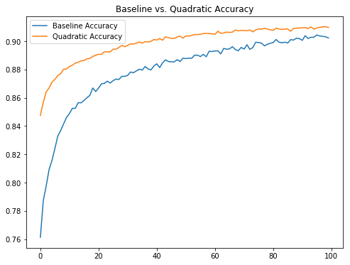

A Simple Quadratic Convolutional Layer in Tensorflow
Generally in computer vision research and applications the greatest successes have come from neural networks composed of various convolutional layers. More specifically, they are composed of linear convolutional layers.
As a refresher, in order to construct a linear convolutional layer applied to an input image \(X\) in which the convolutional layer has kernel of size \(k \times k\), we first decompose \(X\) as a sequence of \(k \times k\) patches. Then, we vectorize each patch, i.e., we reshape the patch as a vector of length \(k^2\). Lastly, given each vectorized patch \(x\), we compute a result given by
where \(w\) is a vector of length \(k^2\), the kernel, and \(b\) is the bias term. For a beautiful, lucid description of linear convolutions I recommend Christopher Olah's post.
Of course, in the description above I have intentionally ignored some very important details, such as what to do about patches on the boarder of the input (same or valid convolutions), dealing with stride length, etc? What is import to the discussion here, however, is the type of function that is applied to each patch.
The reason I have been stressing the 'linear' in linear convolutions is that the function applied to each patch is a typical linear function. In principle we need not constrain ourselves to linear functions, however, there are good reasons to do so. For one, linear functions are very easy to compute. In fact, many of the recent advances in machine learning can be attributed to our ability to find increasingly more effective ways to perform linear operations (gpus and the like). Another reason is that computing the gradient of a linear function is also very easy, making things like stochastic gradient descent possible and effective when used to optimized linear convolutional networks.
There are also reasons to try other functions besides linear. In a recent Arxiv paper, some authors tried what they called Volterra convolutional layers, or more generally quadratic layers. The idea here is that for each patch \(x\) in the input image, we compute the value
where \(w\) and \(b\) are the same as those appearing in a linear convolution and \(Q\) is a \(k^2 \times k^2\) matrix which contributes a quadratic non-linearity.
It should be noted that this isn't the first time that a quadratic convolutional layer has been proposed in the neural computing literature. For example, some researchers proposed a similar extension however this was done a little while ago when computational facilities were not quite as good as they are now. In addition, the reason for trying a quadratic nonlinearity comes from research into the modelling of the eye and how it responds to various stimulus.
The researchers involved in the Volterra convolutions paper made their code available although for my purposes it was not terribly helpful. Mostly because it was written in Lua and CUDA code implementing the convolution itself. In order to play around with this type of filter I wrote a crude implementation in Tensorflow. Note that there is a slight difference in my implementation compared to the original author's. I do not take into account the symmetric nature of the quadratic form used and so in effect perform some redundant computations. This shouldn't affect the performance of the filter in terms of accuracy and applicability however.
def volterra_conv(inputs, W, input_dim, kernel_size, padding='SAME'): input_patches = tf.extract_image_patches(inputs, ksizes=[1, kernel_size[0], kernel_size[1], 1], strides=[1, 1, 1, 1], rates=[1, 1, 1, 1], padding=padding) batch, out_row, out_col, sizes = input_patches.get_shape().as_list() input_patches = tf.reshape(input_patches, [-1, out_row, out_col, kernel_size[0]*kernel_size[1], input_dim]) V = tf.einsum('abcid,abcjd,dijo->abcdo', input_patches, input_patches, W) return tf.reduce_sum(V, 3) def volterra_layer(inputs, filters=32, kernel_size=[3, 3], padding='SAME', activation=tf.nn.relu): input_dim = inputs.get_shape().as_list()[-1] W1 = tf.Variable(tf.truncated_normal([input_dim, kernel_size[0]**2, kernel_size[1]**2, filters])) W2 = tf.Variable(tf.truncated_normal([kernel_size[0], kernel_size[1], input_dim, filters])) b = tf.Variable(tf.constant(0.1, shape=[filters])) return activation(volterra_conv(inputs, W1, input_dim, kernel_size, padding=padding) + tf.nn.conv2d(inputs, W2, strides=[1,1,1,1], padding=padding) + b)
Using the code above to implement a quadratic convolutional layer I compared against a standard linear convolutional network applied to the Fashion MNIST data set. The benchmark code used is composed of a 5x5 linear convolutional layer with 32 filters, a max pooling layer, another 5x5 linear convolutional layer with 64 filters, a max pooling layer and then finally a fully dense layer. In order to play fair, since a quadratic convolutional layer has many more free parameters, I tested against a model which consisted of a single 3x3 quadratic convolutional layer with 32 filters followed by max pooling down to a 7x7 image (so it wasn't cheating by using a higher resolution upper layer) followed fully dense layer.
After running both models for 100 epochs the baseline model achieved an accuracy of about 90.23% on the test set and the quadratic model achieved 90.97%. As can be seen in the image above, the quadratic model seems to converge quicker than the baseline linear model. What isn't clear is if this holds for more complicated data sets or more sophisticated models. In addition, due to limited computing power on my end, I do not know if the quadratic model converges to a higher accuracy than the linear model after a larger number of epochs.
What is interesting about this result, however, is the much smaller number of parameters in the quadratic model compared to the linear model. The quadratic model has around 3000 parameters in the convolutional layers where as the linear model has somewhere over 50000 parameters (if my arithmetic is correct). It would be interesting to do a similar comparison on a richer data set.
Please note that a Python notebook is available containing the tests detailed above.